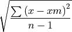

5.3. DataObject Arithmetic#
Summary: |
Operations and arithmetic calculations of dataObject. |
Type: |
Algorithm |
License: |
Licensed under LGPL. |
Platforms: |
Windows, Linux |
Author: |
W. Lyda, M. Gronle, ITO, Universität Stuttgart |
5.3.1. Overview#
This plugin provides several arithmetic calculations for dataObject. These are for instance: - min- or maximum value - centroid along dimensions or inplane
This plugin does not have any unusual dependencies.
These filters are defined in the plugin:
5.3.2. Filters#
Detailed overview about all defined filters:
- itom.algorithms.areEqual(sourceImage1, sourceImage2)#
Element-wise check if two dataObjects are equal. The filter returns 1 if all values of both objects are equal, else 0.
The filter is implemented for all datatypes besides RGBA32, Complex64 and Complex128.
- Parameters:
sourceImage1 (itom.dataObject) –
source image data object for operation
sourceImage2 (itom.dataObject) –
source image data object for operation
- Returns:
result - 0 if both data objects are not equal, else 1
- Return type:
- itom.algorithms.autofocusEstimate(source, method)#
Determines an auto focus estimate for every plane in a given 2D or 3D dataObject.
The estimate is returned in terms of a tuple of double values for each plane. The higher the estimate, the ‘sharper’ the image. There are different methods implemented how the auto focus estimate is calculated.
The methods are partially taken from H. Mir, P. Xu, P. van Beek, ‘An extensive empirical evaluation of focus measures for digital photography’, Proc. SPIE 9023 (2014). Many methods are based on linear filters. If so, their horizontal and vertical version is applied and the result is determined by:
result = sum(sqrt(H*H + V*V)) / numPixelsPerPlane
- Parameters:
source (itom.dataObject) – 2D or 3D source image data object (u)int8, (u)int16, int32 only.
method (str) –
method used to determine the autofocus.
Match: [“3x3Sobel”, “3x3Scharr”, “3x3Roberts”, “3x3Prewitt”, “5x5Sobel”, “3x3Diff”, “3x3Laplacian”, “5x5Laplacian”, “Gradient”], Default: “3x3Sobel”
- Returns:
result - auto focus measure values for every plane in the source image.
- Return type:
Sequence[float]
- itom.algorithms.boundingBox(sourceImage, lowThreshold[, highThreshold])#
This filter calculates the minimum ROI that contains all values within a lower and optional upper threshold.
The return value contains the [x0,y0,width,height] of the minimum ROI.
Values of the data object belong to the ROI if they are >= lowThreshold and <= highThreshold. The highThreshold is only checked, if it is different than the default value (maximum value of double).
The filter does not work with RGBA32, Complex64 and Complex128, but with all other datatypes. This filter has got a fast implementation for fixed-point data types without an higher threshold (since version 0.0.3).
- Parameters:
sourceImage (itom.dataObject) – 2D source image data object (u)int8, (u)int16, int32, float32 or float64 only.
lowThreshold (float) –
only values >= lowThreshold are considered for the ROI
All values allowed, Default: 0highThreshold (float, optional) –
if given, only values <= highThreshold are considered for the ROI
All values allowed, Default: inf
- Returns:
roi - ROI of bounding box [x0,y0,width,height]
- Return type:
Sequence[int]
- itom.algorithms.centroid1D(sourceImage, destCOG, destIntensity[, pvThreshold, dynamicThreshold, lowerThreshold, columnWise])#
Calculate center of gravity for each plane along the x- or y-direction.
This methods creates the two given data objects ‘destCOG’ and ‘destIntensity’ in the following way:
destCOG, ito::float64, sizes: [nrOfPlanes x sizeOfElements], contains the sub-pixel wise one-dimensional coordinate of the center of gravity (in physical coordinates) or NaN if it could not be determined.
destIntensity, same type than input object, sizes: [nrOfPlanes x sizeOfElements], contains the absolute maximum along the search direction.
If the center of gravity should be calculated along each row of each plane inside of the given ‘sourceStack’ data object, the parameter ‘columnWise’ must be 0, for a column-wise calculation is must be set to 1. Along each search direction, the corresponding minimum and maximum value is determined and the center of gravity is determined using:
A value I is only valid and considered in the equation above if:
(max - min) > pvThreshold (peak-to-valley threshold, if not given, destCOG contains NaN at this position)
I > lowerThreshold (only checked if lowerThreshold > minimum possible value of the given data type)
I > (max + min) * dynamicThreshold (only checked if dynamicThreshold > 0.0)
The value ‘lowerBoundary’ is set to the corresponding maximum of ‘lowerThreshold’ and ‘dynamicThreshold’ if one of those is checked; else the given data is considered that the values all drop to zero at the edge of each search range; for a valid cog determination, it is necessary to assume that all values that are far away from the cog position have values around zero; if this is not the case consider to set an appropriate value ‘lowerThreshold’ and / or ‘dynamicThreshold’.
The filter is not implemented for complex data types and the type rgba32 since there is no maximum value defined for these types.
- Parameters:
sourceImage (itom.dataObject) – source image data (2D or 3D) object for operation (u)int8, (u)int16, int32, float32 or float64
destCOG (itom.dataObject) – destination object for center of gravity values (in physical coordinates), float64, size: [numPlanes x sizeOfElements]
destIntensity (itom.dataObject) – destination object for the absolute maximum along the search direction, same type than source image, size: [numPlanes x sizeOfElements]
pvThreshold (float, optional) –
if (max-min) along the search direction is lower or equal this pvThreshold (peak-to-valley), no cog is determined and a NaN value is set into the resulting position array (default: this threshold is not considered).
Value range: [0, inf], Default: 0dynamicThreshold (float, optional) –
If != 0.0, values <= (max+min)*dynamicThreshold will be ignored. To only consider values above the FWHM, set this value to 0.5 (default).
Value range: [0, 0.999], Default: 0.5lowerThreshold (float, optional) –
values <= lowerThreshold will not be considered for the cog calculation (default: this threshold is not considered).
All values allowed, Default: -infcolumnWise (int, optional) –
0: COG search along each row (default), 1: along each column
Value range: [0, 1], Default: 0
- itom.algorithms.centroidXY(sourceImage[, lowThreshold, highThreshold])#
This filter calculates the center of gravity of a 2D real image.
The return value contains the column and row position in pixel and physical coordinates.
For the determination, only values in the range [lowThreshold, highThreshold] are considered. The COG algorithm requires, that all values that do not belong to the required peak have values around zero. In order to achieve this, the ‘lowThreshold’ value is subtracted from each valid intensity value before calculating the COG with the following equations:

The filter does not work with RGBA32, Complex64 and Complex128, but with all other datatypes.
- Parameters:
sourceImage (itom.dataObject) – 2D source image data object (u)int8, (u)int16, int32, float32 or float64 only.
lowThreshold (float, optional) –
values < lowThreshold are ignored. lowThreshold is subtracted from each valid value before COG determination.
All values allowed, Default: 0highThreshold (float, optional) –
values > highThreshold are ignored.
All values allowed, Default: inf
- Returns:
cYI - y-Coordinate of COG (index)
- Return type:
- Returns:
cXI - x-Coordinate of COG (index)
- Return type:
- Returns:
cY - y-Coordinate of COG (physical unit)
- Return type:
- Returns:
cX - x-Coordinate of COG (physical unit)
- Return type:
- itom.algorithms.deviationValue(sourceImage[, flag, ignoreInf])#
This method returns the arithmetic mean and the standard deviation of the given dataObject within its ROI.
Use the optional argument ‘flag’ to choose between two formulas for the determination of the standard deviation. Either (flag = 0):

or (flag = 1):
This method is implemented for all datatypes besides RGBA32, Complex64 and Complex128
- Parameters:
sourceImage (itom.dataObject) – source image data object for operation
flag (int, optional) –
Toggles the calculation mode of standard deviation over N or N-1 elements
Value range: [0, 1], Default: 0ignoreInf (int, optional) –
Ignore invalid-Values for floating point
Value range: [0, 1], Default: 1
- Returns:
mean - mean result
- Return type:
- Returns:
dev - deviation result
- Return type:
- itom.algorithms.findMultiSpots(image, spots[, backgroundNoise, minPeakHeight, maxPeakDiameter, searchStepSize, maxBackgroundLevel, mode, maxNrOfSpots])#
This method determines the sub-pixel peak position of multiple spots in an image.
This algorithm is implemented for 2D or 3D input images of type uint8 or uint16 only and has been developed with respect to a fast implementation. At first, the image is analyzed line-wise with a line distancen of ‘searchStepSize’. In every line the coarse peak position of every 1D peak is analyzed. This can be done in two different ways (depending on the parameter ‘mode’ (0, 2 or 4):
In mode 0 (slightly slower) pixels belong to the background if their distance to the previous pixel (the search step size is also considered in each line) is smaller than ‘backgroundNoise’. If this is not the case, a potential peak starts. However this peak is only a true peak, if the peak’s height is bigger than ‘minPeakHeight’.
In mode 2, a peak consists of a sequence of pixels whose gray-value are all >= ‘maxBackgroundLevel’ (fast, but requires homogeneous background and peak levels).
In mode 4, a peak can only start if a current gray-value is >= ‘minPeakHeight’ and if the difference to its previous pixel is bigger than ‘backgroundNoise’. The peak is only finished and hence stopped if the difference between its highest gray-value and the start-value has been at least ‘minPeakHeight’, checked at the moment if the gradient is currently negative and its current gray value is either below ‘minPeakHeight’ or its difference to the previous value is <= ‘backgroundNoise’.
After all peaks in all analyzed lines have been detected, peaks in adjacent lines(step size of ‘searchStepSize’) are clustered considering the parameter ‘maxPeakDiameter’.Finally the center of gravity is determined around each local maximum using ‘maxPeakDiameter’ as rectangular size of the search rectangle around the coarse maximum position.The results are stored in the data object ‘spots’. The ‘spots’ object is two dimensional for a 2D input image, else 3D where the first dimension corresponds to the number of planes in ‘input’. Each line corresponds to one peak and contains its sub - pixel precise row and column as well as the coarse intensity value and the area of the peak. This value may differ from the real peak value due to the search grid size of ‘searchStepSize’.
The parameter ‘searchStepSize’ is a list of two values, the first describes the vertical step size, the second the horizontal step size.
- Parameters:
image (itom.dataObject) – input 2D or 3D uint8 or uint16 data object (in case of 3D, every plane is analyzed independently and the resulting spot object is 3D as well. Indicate parameter ‘maxNrOfSpots’ in case of 3D.
spots (itom.dataObject) – resulting data object with spot coordinates. Every line consists of the following entries: [sub-pixel wise row (physical coordinates), sub-pixel wise column (physical coordinates), coarse intensity of the peak, area of the peak (nr of pixels brighter than background)].
backgroundNoise (int, optional) –
maximum difference between two adjacent background values (used for deciding if pixel belongs to background or peak, only necessary in mode 0)
Value range: [0, 65535], Default: 3minPeakHeight (int, optional) –
minimum height of a peak (its maximum and the neighbouring background, only necessary in mode 0).
Value range: [2, 65535], Default: 7maxPeakDiameter (int, optional) –
maximum diameter of a peak (this is used to distinguish between neighbouring peaks and the determination of the sub-pixel peak position).
Value range: [3, 65535], Default: 15searchStepSize (Sequence[int], optional) –
step size in pixel for the coarse search of peaks (for rows and columns)
2 values required, Value range: [0, 1000], Default: [2, 2]maxBackgroundLevel (int, optional) –
maximum background level for subpixel determination, in mode 2 this value is the single value used to determine if value is a peak.
Value range: [0, 65535], Default: 5mode (int, optional) –
implemented modes are 0, 2 or 4. Depending on each mode, the search strategy of possible points in each line is kindly different and varies in speed and accuracy.
Value range: [0, 4], Default: 0maxNrOfSpots (int, optional) –
if > 0 the resulting spots object is limited to the maximum number of spots (unsorted), else it contains as many lines as detected spots. In case of a 3D image, every plane is analyzed. Then it becomes necessary to indicate this parameter. If ‘spots’ is then allocated with a bigger number of lines than detected peaks, the additional lines are filled with 0.0.
Value range: [0, inf], Default: 0
- itom.algorithms.gaussianFit1D(x, y[, tolerance, ignoreNaN])#
Fits Gaussian for given x and y values.
This method fits a Gaussian curve of the form:
y = A * exp(-(x - mu)^2 / (2 * sigma^2))
It implements the iterative method, described in the paper
Hongwei Guo et. al, A Simple Algorithm for Fitting a Gaussian Function, IEEE Signal Processing Magazine, 28(5), 2011
There is no additional bias or offset considered, such that a fit will provide valid results only if the y-values trend towards zero at the edges. If less than three values > 0 are given, the fit will fail.
The returned values are the coefficients A, mu and sigma.
For the calculation, an internal accumulator has to be created. To avoid a buffer overflow of this accumulator, do not use to big values. Possibly downscale the values of the source objects.
- Parameters:
x (itom.dataObject) – 1xN, float64 x coordinates
y (itom.dataObject) – 1xN, float64 y coordinates
tolerance (float, optional) –
Stop criteria for the iterative approach. If the norm of the difference of the internal vector (a,b,c) (see referenced paper) is smaller than this tolerance, the iteration is stopped. The maximum iteration count is 20 in any case.
Value range: [0, 10000], Default: 0.001ignoreNaN (int, optional) –
If 1, NaN values in x and / or y are ignored.
Value range: [0, 1], Default: 1
- Returns:
A - The magnitude A
- Return type:
- Returns:
mu - The center mu
- Return type:
- Returns:
sigma - The value sigma
- Return type:
- itom.algorithms.getPercentageThreshold(data, percentage)#
analyzes all values in the given data object and returns the value, which is at a given percentage in the sorted value list.
- itom.algorithms.localCentroidXY(sourceImage, coarseSpots, centroids[, lowThreshold, highThreshold])#
This filter determines the sub-pixel spot position of multiple spots in an image. The pixel-precise spot position must be given including the size of the area around the coarse spot position over which the center of gravity algorithm is applied.
The area can either be a rectangle (width and height, odd values) or a circle (odd diameter).
The COG is calculated by the following algorithm:

The lowThreshold can either be given or (if it is NaN), the minimum value of each area will be taken as local lower threshold. Only values <= highThreshold are considered, set highThreshold to NaN or Inf in order to do not consider this constraint.
Usually, the resulting ‘centroids’ object contains the sub-pixel x and y position as well as the number of valid pixels in each row. If no or only one valid pixel has been encountered, the coarse pixel x and y position as well as 0 or 1 (for no or one valid pixel) is returned.
If the coarse spot position lies outside of the image, the resulting row in ‘centroids’ contains NaN coordinates. Please consider, that all input and output coordinates are assumed to be pixel values, the scaling and offset of the image are not considered.
- Parameters:
sourceImage (itom.dataObject) – 2D source image data object (u)int8, (u)int16, int32, float32 or float64 only.
coarseSpots (itom.dataObject) – Mx3 or Mx4 2D data object of type uint16, each row corresponds to one spot. The line contains [px_x, px_y, circle_diameter] if the cog should be determined within a circle or [px_x, px_y, width, height] if the cog should be determined within a rectangle. circle_diameter, width or height have to be odd.
centroids (itom.dataObject) – resulting Mx3 data object of type float64 with the sub-pixel precise position of the spots (all is given in pixel coordinates, never physical coordinates). Each row is [subpix_x, subpix_y, nr_of_valid_elements_within_search_mask] or [px_x, px_y, 0 | 1] if the spot only contained one or no valid values.
lowThreshold (float, optional) –
values < lowThreshold are ignored. lowThreshold is subtracted from each valid value before COG determination. if lowThreshold is NaN (default), the lowest value within each spot search area is taken as local minimum value.
All values allowed, Default: nanhighThreshold (float, optional) –
values > highThreshold are ignored.
All values allowed, Default: inf
- itom.algorithms.maxValue(sourceImage[, ignoreInf])#
This filter calculates the global maximum value and its first location within the dataObject.
The returned value will be an integer for all fixed-point data types and float for all floating point types. The global maximum of complex data types is defined to be the global maximum of all absolute values.
The filter is implemented for all data types besides RGBA32
- Parameters:
sourceImage (itom.dataObject) – source image data object for operation
ignoreInf (int, optional) –
Ignore invalid-Values for floating point
Value range: [0, 1], Default: 0
- Returns:
result - result of calculation. This param can be int or double
- Return type:
- Returns:
plane - Index of the plane, which contains the result.
- Return type:
- Returns:
y - Pixelindex in y-direction.
- Return type:
- Returns:
x - Pixelindex in x-direction.
- Return type:
- itom.algorithms.meanValue(sourceImage[, ignoreInf])#
This filter calculates the mean value within the dataObject.
The return value containing the mean value of the dataObject.
The filter is implemented for all datatypes besides RGBA32, Complex64 and Complex128
- itom.algorithms.medianValue(sourceImage[, ignoreInf])#
This method calculates the median value over all values in the data object.
The returned median values is given as double.
This method is implemented for all datatypes besides RGBA32, Complex64 and Complex128
- itom.algorithms.minMaxValue(sourceImage[, ignoreInf, complexHandling])#
This filter calculates the minimal and maximal value and its first location within the dataObject.
The returned values will be integer for all fixed-point data types or float for all floating point types.
The filter does not work with RGBA32 but with all other datatypes.
- Parameters:
sourceImage (itom.dataObject) – source image data object for operation
ignoreInf (int, optional) –
Ignore invalid-Values for floating point
Value range: [0, 1], Default: 0complexHandling (int, optional) –
Switch complex handling, 0:abs-Value, 1:imaginary-Value, 2:real-Value, 3: argument-Value
Value range: [0, 3], Default: 0
- Returns:
minimum - Minimal value, this parameter be int or double
- Return type:
- Returns:
planeMin - Index of the plane, which contains the result.
- Return type:
- Returns:
yMin - Pixelindex in y-direction.
- Return type:
- Returns:
xMin - Pixelindex in x-direction.
- Return type:
- Returns:
maximum - Maximum value, this parameter. This param can be int or double
- Return type:
- Returns:
planeMax - Index of the plane, which contains the result.
- Return type:
- Returns:
yMax - Pixelindex in y-direction.
- Return type:
- Returns:
xMax - Pixelindex in x-direction.
- Return type:
- itom.algorithms.minValue(sourceImage[, ignoreInf])#
This filter calculates the global minimum value and its first location within the dataObject.
The returned value will be an integer for all fixed-point data types and float for all floating point types.
The filter is implemented for all data types besides RGBA32, Complex64 and Complex128
- Parameters:
sourceImage (itom.dataObject) – source image data object for operation
ignoreInf (int, optional) –
Ignore invalid-Values for floating point
Value range: [0, 1], Default: 0
- Returns:
result - result of calculation. This param can be int or double
- Return type:
- Returns:
plane - Index of the plane, which contains the result.
- Return type:
- Returns:
y - Pixelindex in y-direction.
- Return type:
- Returns:
x - Pixelindex in x-direction.
- Return type:
5.3.3. Changelog#
itom setup 1.2.0: Release